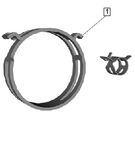

弹簧式软管卡箍更换指南

车辆使用弹簧式软管卡箍 (1) 来紧固接头，接头中的液体、气体或发动机真空可流至各种车辆系统。设计弹簧式软管卡箍的目的是提供适量的张紧力，使接头在车辆寿命期内免于泄漏和维护。
弹簧式软管卡箍的外部涂有特殊的涂层，目的是防锈/防腐、提高耐用性并延长软管卡箍的寿命。如果涂层受损，则可能会产生锈蚀，导致软管卡箍需要更换。
上汽通用汽车公司所用的很多弹簧式软管卡箍将少量的胶合剂用于制造用途，胶合剂直接置于软管卡箍上，使卡箍紧固在配合的软管上。随着时间的推移，胶合剂的强度将退化。当技术人员试图维修接头或拆除软管卡箍时，不得转动或重新定位卡箍，以免磨损或损坏软管，这一点尤其重要。在这种情况下，必须同时更换软管和卡箍。
维修车辆时，必须观察软管和弹簧式软管卡箍的状态以及卡箍相对于软管的方位，这一点非常重要。
如果弹簧式软管卡箍的任何部位出现以下情况，请立即更换卡箍。
- • 锈蚀
- • 开裂
- • 物理损坏
- • 因卡箍的固定而导致的泄漏